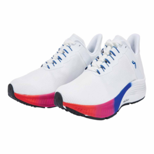
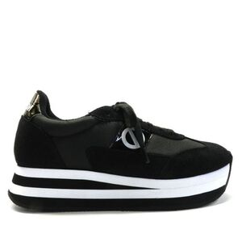
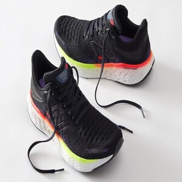
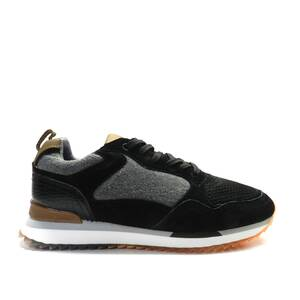
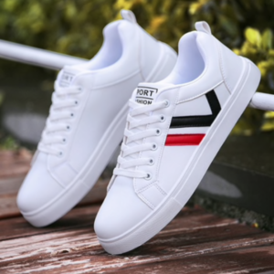
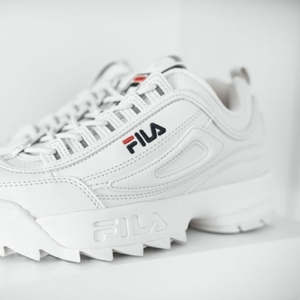

Detalles
Estas zapatillas son de color blanco con detalles en negro y están fabricadas con una mezcla de materiales sintéticos y textiles de alta calidad. Tienen un diseño moderno y elegante con una silueta aerodinámica y una suela de goma que proporciona una excelente tracción y durabilidad.
Las zapatillas también cuentan con una plantilla acolchada y una entresuela de espuma que brinda una excelente comodidad y soporte durante todo el día. Además, tienen una lengüeta y un cuello acolchados para un ajuste cómodo y seguro alrededor del pie.
En general, estas zapatillas son ideales para cualquier actividad deportiva o casual, y su diseño atemporal y versátil las convierte en una excelente opción para cualquier persona que busque estilo y comodidad en un calzado.

Estas zapatillas son de color negro con detalles en gris y están hechas de una mezcla de cuero y tela de alta calidad. Presentan un estilo moderno y minimalista con líneas limpias y una forma elegante que se adapta a la forma del pie.
La suela de goma gruesa proporciona una gran tracción y durabilidad, mientras que la plantilla acolchada ofrece una comodidad adicional durante todo el día. Las zapatillas también cuentan con una lengüeta y un cuello acolchados para un ajuste cómodo y seguro alrededor del pie.Además, estas zapatillas tienen una combinación de cordones y una tira de velcro que permite un ajuste personalizado para un mayor soporte y comodidad. Son perfectas para caminar, correr, hacer deporte o para un look casual y moderno en cualquier ocasión.
En resumen, estas zapatillas son una excelente opción para cualquier persona que busque un calzado cómodo, duradero y con estilo.

Estas zapatillas son de un vibrante color rojo y tienen un diseño moderno y deportivo. Están hechas de materiales sintéticos de alta calidad que proporcionan una excelente resistencia y durabilidad, y tienen detalles en blanco y negro para un aspecto más llamativo.
La suela exterior es de goma y cuenta con un patrón de tracción para una mayor estabilidad y agarre en cualquier superficie. Además, las zapatillas tienen una plantilla acolchada que brinda una gran comodidad durante todo el día y un sistema de cordones que permite un ajuste personalizado.
La lengüeta y el cuello acolchados garantizan un ajuste cómodo alrededor del pie, mientras que la malla transpirable en la parte superior permite que el pie respire, evitando la sudoración excesiva.
En resumen, estas zapatillas son ideales para cualquier actividad deportiva o casual. Su diseño llamativo y colorido las hace perfectas para aquellos que buscan un estilo único y distintivo, y su construcción duradera garantiza que durarán mucho tiempo en cualquier situación.

Estas zapatillas son de un elegante color marrón oscuro y presentan un diseño clásico y sofisticado. Están fabricadas con materiales de alta calidad, como cuero y gamuza, que ofrecen una excelente durabilidad y resistencia.
La suela exterior es de goma y cuenta con un patrón de tracción que brinda una gran estabilidad y agarre en cualquier superficie. Además, las zapatillas tienen una plantilla acolchada que ofrece una comodidad adicional durante todo el día, mientras que el sistema de cordones permite un ajuste personalizado.
La lengüeta y el cuello acolchados aseguran un ajuste cómodo alrededor del pie, mientras que el forro de tela suave proporciona una sensación agradable y acogedora. El diseño clásico de estas zapatillas las hace perfectas para cualquier ocasión, desde un día casual en la ciudad hasta una reunión de negocios.
En resumen, estas zapatillas son una excelente opción para aquellos que buscan un calzado cómodo, duradero y elegante. Con su construcción de alta calidad y diseño clásico, son una inversión a largo plazo que vale la pena hacer.

Estas zapatillas tienen un color azul marino oscuro y un diseño moderno y deportivo. Están fabricadas con una combinación de materiales sintéticos y textiles de alta calidad que ofrecen una excelente durabilidad y resistencia.
La suela exterior es de goma y cuenta con un patrón de tracción que brinda una gran estabilidad y agarre en cualquier superficie. La plantilla acolchada ofrece una comodidad adicional durante todo el día, mientras que el sistema de cordones permite un ajuste personalizado y seguro.
La lengüeta y el cuello acolchados garantizan un ajuste cómodo alrededor del pie, mientras que la malla transpirable en la parte superior permite que el pie respire, evitando la sudoración excesiva.

Estas zapatillas tienen un aspecto retro y vintage con su diseño en tonos blanco y crema. Están fabricadas con materiales de alta calidad, como cuero y gamuza, que ofrecen una excelente durabilidad y resistencia.
La suela exterior es de goma y cuenta con un patrón de tracción que brinda una gran estabilidad y agarre en cualquier superficie. La plantilla acolchada ofrece una comodidad adicional durante todo el día, mientras que el sistema de cordones permite un ajuste personalizado y seguro.
La lengüeta y el cuello acolchados aseguran un ajuste cómodo alrededor del pie, mientras que el forro de tela suave proporciona una sensación agradable y acogedora. El diseño retro de estas zapatillas las hace perfectas para un look casual y elegante, ya sea en un día de compras o en una cena informal con amigos.
Además, su estilo vintage las hace perfectas para aquellos que buscan un look único y distintivo. Estas zapatillas también son ideales para aquellos que buscan una alternativa más cómoda a los zapatos de vestir tradicionales.
